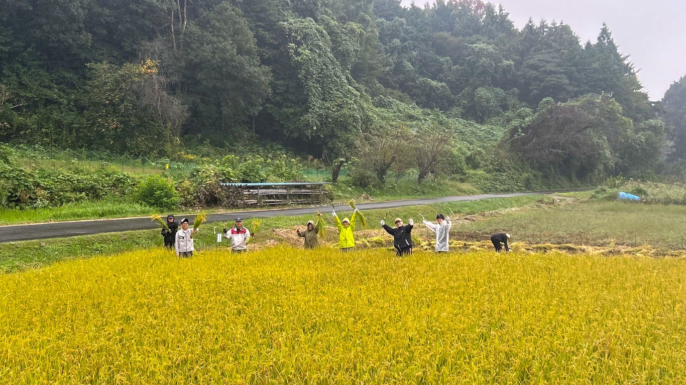

01 / CAREER & PEOPLE
キャリア・人材支援
キャリアコーチング、転職・就職支援、採用支援・採用内製化支援を通じて、個人の次の一歩と企業の採用課題をサポートします。
VERSION-K / COMPANY PROFILE
一人ひとりの想いに向き合い、人・企業・地域をつなぐ。Version-Kの活動と事業をご紹介します。
OUR PHILOSOPHY
Version-Kは、仕事・暮らし・地域の課題に向き合い、必要な人や仕組み、機会をつなぐ総合ブランドです。目の前の相手にとって本当に必要なことは何かを考え、企画だけで終わらせず、現場で使われ、続いていく形に整えることを大切にしています。
私たちが目指すのは、一方だけが得をする関係ではありません。関わる人、企業、地域にとって価値が循環する「三方四方良し」の実現です。
| 屋号 | Version-K |
|---|---|
| 代表 | 山﨑 健勝 KENTO YAMAZAKI |
| 事業場所 | 埼玉県秩父郡東秩父村 |
| メールアドレス | info.versionk@gmail.com |
| 事業内容 |
キャリア・人材支援 キャリアコーチング、転職・就職支援、採用支援・採用内製化支援 システム・デジタル支援 業務システム開発、AI活用・業務自動化、公式LINE構築・マーケティング ハウスクリーニング事業 住まいや施設の清掃を通じて、快適で気持ちよく過ごせる環境づくりを支援 オーダースーツ・独立支援 イージーオーダースーツの提案、独立・起業に向けた相談や人・機会の接続 農業・地域コミュニティ運営 「農業コミュニティ 豊 -YUTAKA-」の運営。無農薬栽培を大切にした有機農業、耕作放棄地の再生、農業体験・交流イベントの企画運営 食育・地域づくり 種まきから栽培、収穫、調理、食べる体験を通じて、食べ物が育つ背景や自然の恵み、作り手への感謝を学ぶ食育活動 |
OUR COMMITMENT
目の前の一人の声を聞き、現場を知り、必要な仕組みをつくる。人と人、人と企業、都市と地域をつなぎながら、誰かの次の一歩を支える存在でありたい。Version-Kは、関わるすべての人とともに成長し、未来につながる価値を育てていきます。
BUSINESS & ACTIVITIES
それぞれの分野で現場の課題に向き合い、必要なサービスや仕組みを届けています。各事業の専門性を活かしながら、人と人、企業と地域をつなぎ、新しい選択肢を生み出します。
キャリアコーチング、転職・就職支援、採用支援・採用内製化支援を通じて、個人の次の一歩と企業の採用課題をサポートします。

業務システム開発、AI活用・業務自動化、公式LINE構築・マーケティングで、現場の業務改善と事業の成長を支援します。

住まいや施設を清潔に整え、安心して気持ちよく過ごせる空間づくりをお手伝いします。

イージーオーダースーツをご提案。独立・起業に向けた相談や、人・機会との接点づくりもサポートします。

「農業コミュニティ 豊 -YUTAKA-」を運営。無農薬栽培を大切にした有機農業、耕作放棄地の再生、農業体験・交流イベントを企画・運営します。

種まきから栽培、収穫、調理、食べる体験を通じて、食べ物が育つ背景や自然の恵み、作り手への感謝を学ぶ機会をつくります。
GET IN TOUCH
サービスについてのご質問、協業・パートナーシップのご相談など、お気軽にお問い合わせください。
お問い合わせ ↗